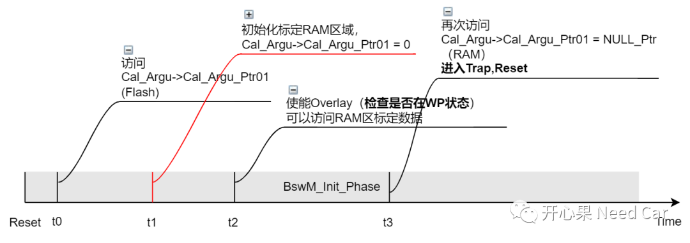
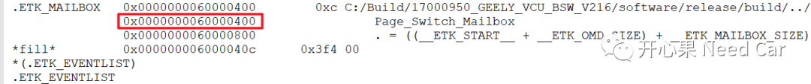
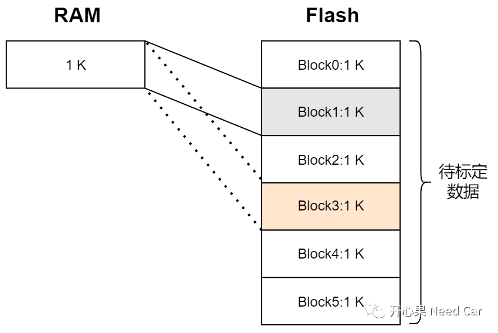
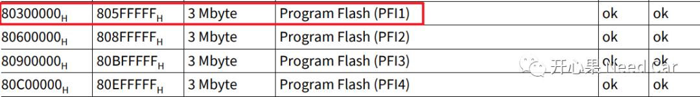
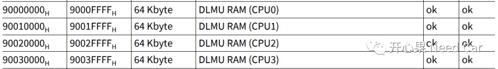
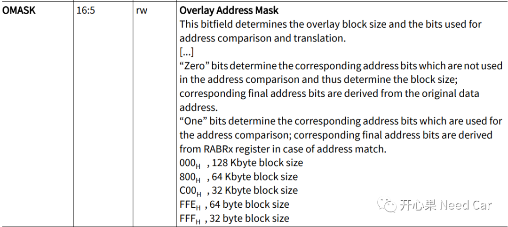
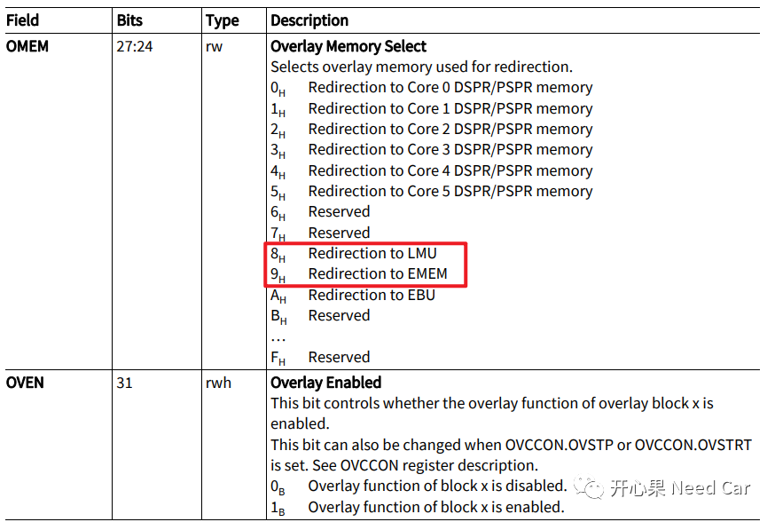
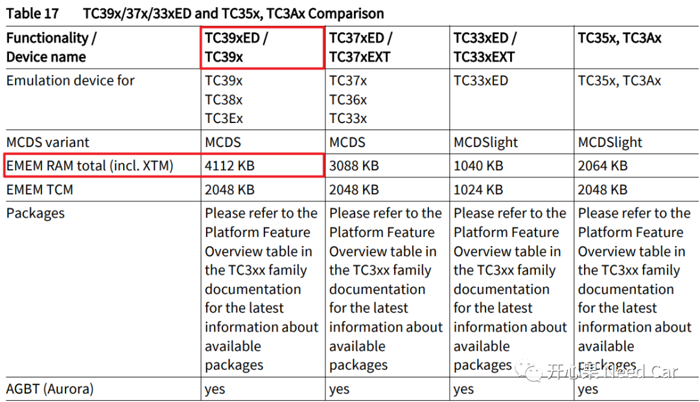
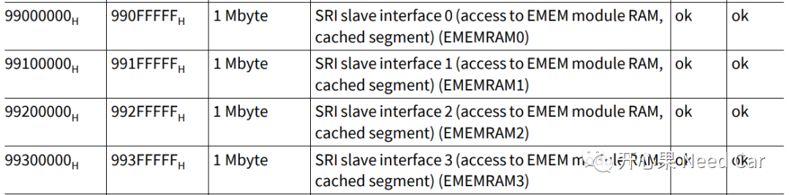
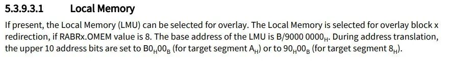

开心果 Need Car · 2022-05-15T13:02:00+08:00 · 微信原文
Step1：Trap_A引发程序复位；
Step2：t0时刻，程序访问标定量Cal_Argu->Cal_Argu_Ptr01，此时访问的是Flash区域的Cal_Argu->Cal_Argu_Ptr01，程序正常执行；

1、WP的判断依据？
答：标定过程中，ETK件中，WP和RP的状态存储在Shared RAM（由全局变量Page_Switch_Mailbox记录），该区域软复位不清零(链接文件中设置该段)，*.map文件中，Page_Switch_Mailbox地址如下所示：

WPREQ_PATTERN == Page_Switch_Mailbox.Start_Page2、标定数据为什么在周期性任务中Copy？
答：标定RAM区空间小，数据需要动态从Flash区Copy到RAM区。比如：可用的标定RAM只有1 K大小，而待标定的Flash数据大小有6 K。所以在初始化的过程中，不能完全将Flash区域数据映射到RAM区域。为解决这个问题，可以在周期性任务中，动态识别所要标定的参数所在的Flash Block，之后根据待标定参数所在Flash Block，将Flash标定数据Copy到RAM。如果Flash Block没有切换，则无需再将Flash标定数据Copy到RAM；如果有新的Flash Block切换（即需要标定另一个Flash Block中的参数），再将新的Flash Block标定数据Copy到RAM。

3、项目使用的标定PFlash区和RAM区




4、英飞凌tc387和tc397在标定功能上的区别
答：tc387不是ED(Emulation Device)芯片，没有专用的标定RAM区，需要消耗自身的RAM区。tc397是ED芯片，有额外的一块标定RAM区。XCP件使用的是tc387芯片，ETK件使用的是tc397芯片。
英飞凌具有ED功能的芯片类型，如下所示：


ED芯片和非ED芯片均使用Local Memory，具体说明如下所示：

往期精彩回顾